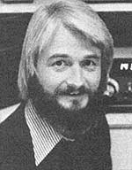

Copthorne Macdonald is the inventor of
slow-scan television . . . a method of
amateur radio transmission that allows
ham operators to both hear and see
each other during shortwave
broadcasts.
George Wood-an ex-Californian now living near Stockholm-works as a broadcaster and editor for Radio Sweden. Not long ago, George got his ham license (his call sign is SMØIIN), and now he's the northernmost and easternmost member of our New Directions family.
Last winter-about the time "cabin fever" was starting to affect us both-George and I began getting together on the air for weekly 3,200-mile chats. (Ham radio is excellent medicine for the winter doldrums. And believe me, you get your share of winter doldrums when you live on a cold, windy island in the Gulf of St. Lawrence-as I do-or at the 59° latitude of Stockholm!) During one of the exchanges that resulted, George made a very exciting suggestion: Why not take advantage of improving radio conditions (see New Directions Radio, MOTHER N0. 50) to launch a 15-meter alternative news and information net? I'll let George elaborate:
"The wire services and TV networks have managed to tie the world together in a web of technology. The Establishment News Media-by using cable, point-to-point microwaves, satellites, facsimile, and other techniques-can carry news instantly from the farthest corner of the globe to our television screens and the front pages of our newspapers. Which is all fine and good. The catch is that it's their news. . . it's what NBC, ABC, and CBS-and AP and UPI-think is important. That's why we're inundated with accounts of Washington's political games, freak weather developments, train wrecks, and terrorist hijackings.
"But how much news do we ever get on alternatives to mainstream politics, or on new projects that threaten the environment, or on the oppression and misery that drive people to commit acts of terror? Not much, if you ask me. Yet I think it's possible-as the alternative press and a scattering of innovative radio stations, commercial and non-commercial, have shown-to bring this kind of news to the public's attention. And I think amateur radio can aid in the dissemination of this news. What we need is an alternative in. formation network' made up of hams from all parts of the world.
"What is 'alternative information' or' alternative news'? The simplest answer is that it's whatever the establishment news media leave out. Alternative news may be stories about food additives that've recently been shown to cause illness, new threats to the environment, reports of torture or other human rights violations in foreign lands, protests against nuclear energy, etc. You can find examples of the kind of news I'm talking about in the 'Organic World' section of Organic Gardening and Farming, the 'Earth Watch' section of New Age, and MOTHER's 'Bits and Pieces'. There's no shortage of 'alternative news stories' to be covered.
"The alternative information net that I envision might meet once a week. Each of the hams checking in would share the week's information with the other stations in turn. Depending on how many hams wanted to become involved, it might be necessary to set up more than one net . . . perhaps a North American net and a trans-Atlantic net, for instance."
The networks that George is proposing would be set up primarily for the enlightenment of the hams involved, but an even wider sharing of information might come about as a secondary benefit . . . because at times, ham activities themselves become news. (The FCC regulations governing hams recognize this and go so far as to permit broadcast stations to re-air the actual transmissions of amateur stations, If they have the amateur's permission to do so.)
Ham radio information nets that serve this dual function of keeping hams AND broadcast stations informed have existed in the U.S. for some years now. For the most part, such nets have been involved in the gathering and sharing of weather in. formation. Each morning, the participating net members meet on the air to exchange information about weather conditions in their respective localities. This gives each member a coherent picture of the current weather over an entire region. Then-as a public service-some of these hams call local radio stations and pass along their understanding of the regional weather picture. Obviously, a similar procedure could be used !n the case of alternative news.
George Wood has this to say: "I can think of many types of radio stations that 'alternative news' hams could contact. First, there are the community radio broadcasters. The Pacifica stations-KPFA Berkeley, KPFK Los Angeles, WBAI New York, and KPFT Houston-would be good choices, as would the KRAB Nebula stations: KRAB Seattle, KBOO Portland, KPOO San Francisco, WYSO Yellow Springs, Ohio, and KCHU Dallas.
"Also, I would think that college radio stations would be good outlets for alternative news. Most colleges-conveniently enough-not only have FM radio stations on campus, but amateur radio clubs and club stations, too.
"In addition, there are some commercial radio stations-KSAN San Francisco, KMET Los Angeles, and KZAP Sacramento come to mind-that might be worth contacting.
"And no one says we have to limit ourselves just to radio stations. I should think that a number of magazines-particularly the smaller national and local alternative publications-might be interested in what we're up to."
If the idea of an alternative news net excites you, by all means drop a line either to me or to George (write: George Wood, Kungshamra 31/107, 171 70 Solna, Sweden) giving your thoughts about possible days, times, modes, frequencies, etc. George and I would like-if possible-to have some preliminary on-the-air sessions before summer to work out scheduling (and other) details.
Before I go, I'd like to pass on an announcement from our old friend Mark Dankoff-better known these days as "Windy" (WD5GQN)-of WindLight Workshop, Rt. 2, Box 271, Santa Fe, N.M. 87501. Mark (whose smiling face graced page 42 of MOTHER NO. 48) says he's started a network for hams who're interested in obtaining electricity from the wind. It's called the Windheads' Net, and its members meet every Monday and Wednesday at 9:00 p.m. Mountain Time on 3898 KHz. CW check-ins are welcome.
Peace,
Cop Macdonald (VE1BFL)
99 Fitzroy St.
Charlottetown
Prince Edward Island
Canada C1A 1R6
New Directions Radio is an international network of radio amateurs concerned with those ways of using ham radio (and related modes of communicating) that promote our own growth as individuals, and which we perceive as helping to create a more aware, more caring, and more responsible human society. We encourage all who share these Interests to work with us. A current schedule of on-the-air activities is included in each issue of the bi-monthly New Directions Roundtable Newsletter published by Randy Brink (WA7BKR/Ø) and "Bo" Bogardus (W6HSE) as a service to the rest of us. Send one 13Q stamp for each Issue desired to: Randy Brink, 2618 W. Serendipity, Apt. 124, Colorado Springs, Colo. 80917.
|
 |
|
|